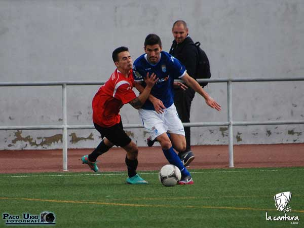
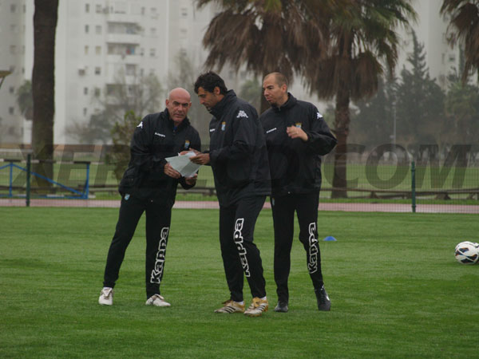

Victoria en casa, que deja más cerca el objetivo Xerez CD 1-0 Sevilla Este

Gran partido disputado en el complejo deportivo La granja, en el que ambos equipos se jugaban mucho. Al principio ningún equipo supo controlar el partido. A los 25 minutos de la primera mitad se adelantó el Xerez,una falta en contra la supó aprovechar Reales, gracias a una magnífica contra en dos paredes en la cual llegó a línea de fondo y un centro genial para que Nico sólo tuviera que empujar el balón hacia dentro. De aquí hasta el final del partido los dos equipos crearon varias ocasiones de gol pero que no se supieron materializar. Con el resultado final de 1-0 a favor de los locales, el Xerez CD tiene a un paso el objetivo principal, que era la permanencia en la máxima categoría de juveniles. Ahora hay una semana de descanso y la semana que viene esperamos conseguir la victoria que nos deje matemáticamente salvados.
10 marzo 2013
Otro buen empate fuera de casa Córdoba CF 2-2 Xerez CD

Partido bonito entre ambos clubes en los que los dos equipos se jugaban mucho en este encuentro. El primer equipo en estrenar el marcador fue el Córdoba, en la que una jugada por la banda derecha, intenta despejar Marcelo y deja el balón muerto para que lo empuje el jugador local. A partir de aquí el Xerez CD dispone de varias jugadas claras para empatar el partido, y a los 30 minutos de juego, un buen centro de Coto por la banda derecha y un gran remate de Álex hacen el empate a 1 en el marcador. Nos vamos al descanso con este resultado. En la segunda parte ningún equipo consigue mantener la posesión, y se adelantan los visitantes por un gran gol de falta directa de Nico. Al minuto del gol visitante un fallo de concentración por parte del Xerez CD, lo aprovecha el Córdoba para hacer el definitivo 2-2. Pudo haber más para los locales gracias a un penalti, en la que Manu realiza una parada espectacular y en el último minuto de la segunda parte un claro penalti no fue señalado a favor de los visitantes. Este punto es bueno para los 2 equipos, sin embargo el Xerez CD se juega mucho esta semana recibiendo en casa al Sevilla Este, en el que esperamos el apoyo de todo el mundo para este gran partido.
3 marzo 2013
Seguimos luchando Xerez CD 2-2 Málaga CF

Buen partido se disputó ante un Málaga invicto en toda la liga, en la que el Xerez empezó poniéndose por delante en el marcador con un gol de Cañas en un córner. Se vió un Xerez muy bien plantado en el campo y con las ideas muy claras, pero a falta de 10 minutos para el final del primer tiempo, dos córnes a favor del Málaga fueron los que le dieron la vuelta al marcador. Dos fallos defensivos del Xerez en un minuto. En la segunda mitad se ve un Xerez que quiere la pelota y va a por el partido, anotando así el definitivo 2-2 por parte de Figueroa. Contentos por el empate y seguimos a 6 puntos del descenso, ahora hay que pensar en el próximo partido contra el Córdoba CF.
24 febrero 2013
Se nos van dos grandes... Fernando Niño y Manuel Salado

Después de la destitución de Esteban Vigo, ex entrenador del Xerez CD, debido a las 14 semanas sin ganar un sólo partido, el Xerez CD se ve obligado a contratar un nuevo entrenador para el primer equipo, Carlos Ríos. Como segundo entrenador le acompañará nuestro entrenador Fernando Niño y nuestro preparador físico Manuel Salado. Desde aquí me gustaría agracederles el magnífico año realizado en la máxima categoría de juveniles (División de Honor) y desearle mucha suerte en sus nuevas etapas como profesionales.
22 febrero 2013
Otra derrota más fuera de casa Los Molinos 1-0 Xerez CD

Partido en el que los dos equipos necesitaban la victoria, para alejarse de los puestos de descenso. El partido se le puso al Xerez CD cara arriba cuando en el minuto 27 de la primera mitad expulsan a un jugador por una patada a destiempo al portero Manu. Se fueron los dos equipos al descanso con un 0-0. Al comienzo de la segunda mitad, un córner a favor de Los Molinos acabó en gol. De aquí en adelante el Xerez CD dominó el partido hasta el final, intentando buscar un hueco entre la defensa rival, pero no consiguió el tan ansiado gol del empate. Otra derrota más fuera de casa, ahora hay que pensar en el Málaga CF, único equipo invicto de la categoría.
17 febrero 2013